Irrespective of your reputation, experience, and educational qualifications, only two things decide the fate of your trade – 1) Entry and 2) Exit.
Everything else doesn’t matter, or the market doesn’t care about any other aspect except your ‘Entry’ and ‘Exit’. Hence, it is better to have a deep understanding of the price to get success.
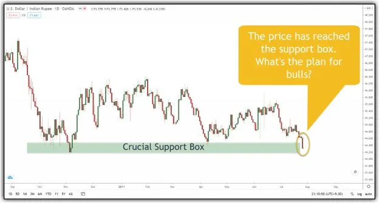
Image 6.1 – Support Trading Plan (a)
Image 6.1(a) shows a support box in the USD-INR chart, and the price has reached the support box.
If the smart money (big people who already invested) still have a bullish view, what do they do? They pitch in and buy in large quantities. Otherwise (if they are not bullish), buying will not come. Isn’t it? Let’s see what happened in the next candle.
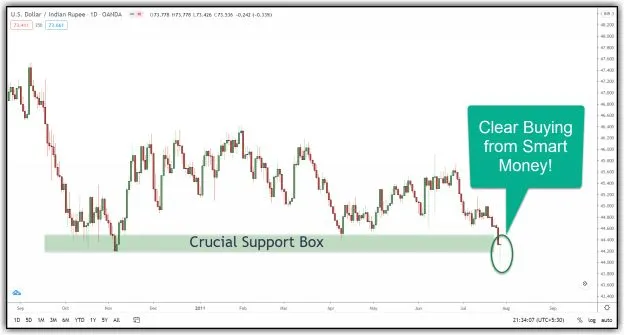
Image 6.2 – Support Trading Plan (b)
Now carefully observe what happened the next day. The price broke the lower levels of the support box. If the smart money is bullish (or keen to accumulate this), it is a wonderful opportunity for them. Hence, they entered with large quantity, and their size displayed as the rejection of the break of the support. It is called ‘Price Rejection.’
Once the price shows clear rejection from the smart money, there is a higher probability of the support box acting as support.
Hence, traders can plan a long trade above the rejection candle (or at the upper line of the support box if you are looking for a safer trade), keeping a stop-loss below the rejection candle.
Below Image shows the result:
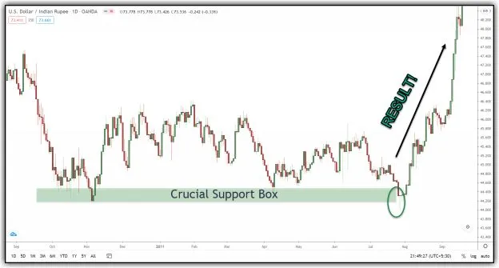
Image 6.3 – Support Trading Plan - Result
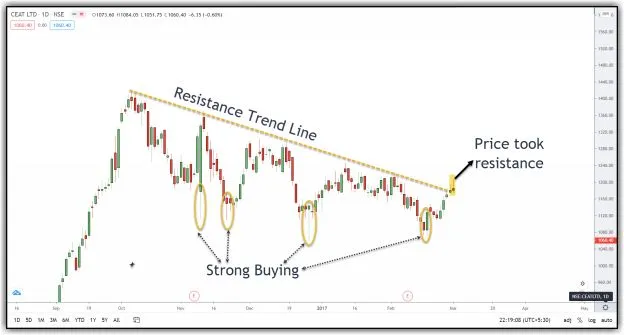
Image 6.4 – Resistance Trading Plan (a)
There is a clear resistance trend line, and it looks like the price is taking resistance at the moment. But if you observe, one can identify two things (this is the beauty of price action trading):
If the sellers are powerful, they have to take the price below the strong buying level. Isn’t it?
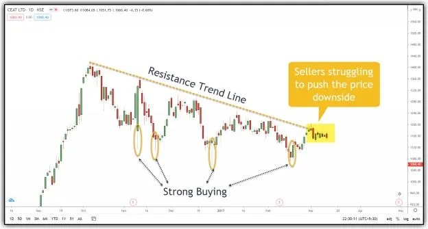
Image 6.5 – Resistance Trading Plan (b)
Image 6.5 shows what happened next few days. Sellers were clearly struggling to push the price downside.
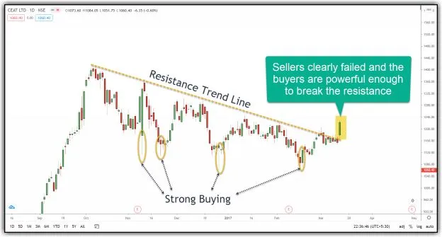
Image 6.6 – Resistance Trading Plan (c)
In image 6.6, the failure of sellers is clearly visible. Besides, buyers’ dominance pushed the price above the resistance trend line and witnessed a strong close. It is called ‘Price Acceptance.’
Do you think now is it still a good idea to think resistance line acts as resistance?
I hope your answer is ‘No’!
We can then plan a long trade above the high of the accepted candle; keeping a stop-loss below the accepted candle. This has every probability of success, isn’t it?
You can see the result in image 6.7!
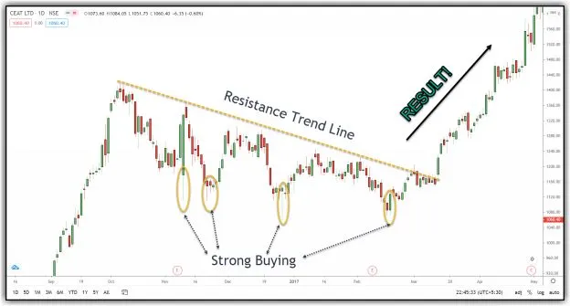
Image 6.7 – Resistance Trading Plan – Result
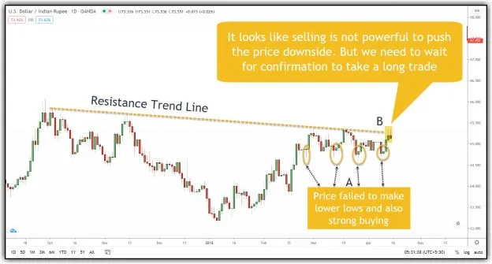
Image 6.8 – Case Study 1 (PA-1)
Case study-1 shows the USD-INR Daily chart. There is a good resistance trend line, the price traded below the trend line for over a month. But sellers' power is not enough to push the price to the downside (as it failed to make lower-lows), and also strong buying can be witnessed at every swing low (highlighted as 'A' in the image).
Besides, the price is trying to trade above the resistance trend line. It is a beautiful opportunity for sellers (if they are keen) to load their short positions. But their activity is so small that it created only two small pin bars.
It indicates a higher probability of price trading above the resistance trend line (which means the resistance line will not hold). However, we should not plan a 'Long' trade at this point. We need to wait for the entry of bulls (or the complete negation of sellers).
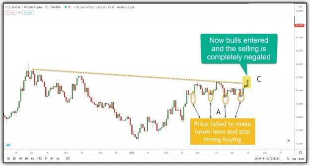
Image 6.9 – Case Study 1 (PA-2)
Image 6.9 shows the same chart after one day of trading activity. It is evident that sellers failed to push the price downside. Besides, buyers also entered and negated all the selling (highlighted as ‘C’). It also supports our previous assumption. Hence, it is better to plan a ‘Long’ trade above the green candle's high, keeping a stop-loss below the low of the green candle. This trade has a high probability of success.
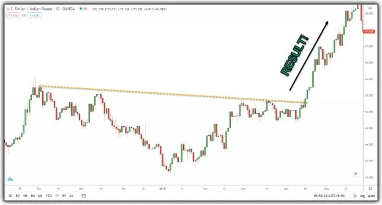
Image 6.10 – Case Study 1 Result
As I said earlier, only ‘Entry’ and ‘Exit’ decide the fate of your trade. At the moment, I am focusing on ‘Entry.’ I will also provide a detailed explanation of ‘Exit’ in the subsequent case studies.
Every trader can follow a straightforward exit strategy to book profits for 50% of the position at 1:2 risk-reward and carry the rest with the trail SL concept (below swing low for ‘long’ trades and above the swing high for ‘short’ trades).
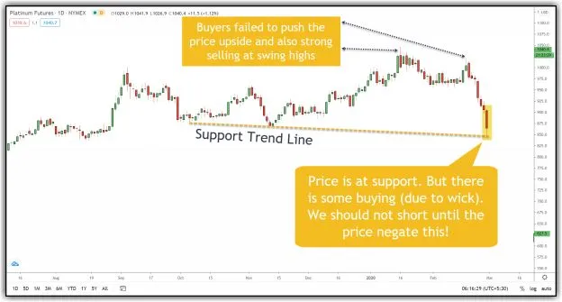
IImage 6.11 – Case Study 2 (PA-1)
Image 6.11 shows the daily chart of Platinum Futures. It has a good support trend line. The price is near the support line, and the question is whether it will hold or not.
If you observe, the price failed to make higher highs, and the selling is strong at the swing highs. We should not short at this moment as the scrip witnessed some buying (due to small buying wick). We can plan a ‘short’ trade once the price negates the selling.
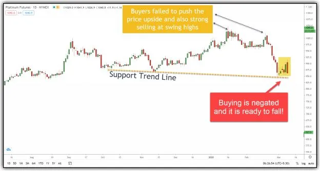
Image 6.12 – Case Study 2 (PA-2)
Image 6.12 provides the same chart, but after a few days of trading activity.
It is evident that buyers struggled a lot to push the price to the upside (consolidation). Besides, there is a significant bearish candle (bearish engulfing) at the end, the last nail in the bulls’ coffin.
It indicates ‘Price Acceptance.’ It means there is a higher probability of price going downside. Isn’t it? So, we can plan a ‘short’ trade below the low of the big bearish candle (or below the trend line for safe trade), keeping a stop-loss above the high of the bearish candle.
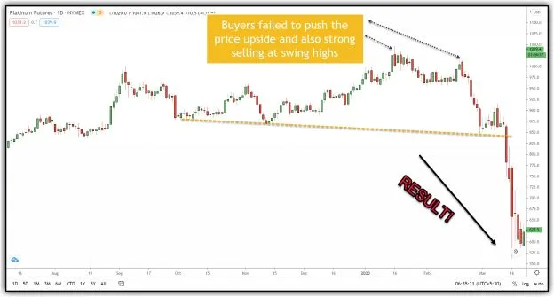
Image 6.13 – Case Study 2 Result
Image 6.13 shows the result of this trade, and it conveys everything. In this case, there are no good reference points to manage ‘exit.’ Hence, a trader can exit 50% for 1:2 risk-reward and carry the rest with the trail S.L. concept.
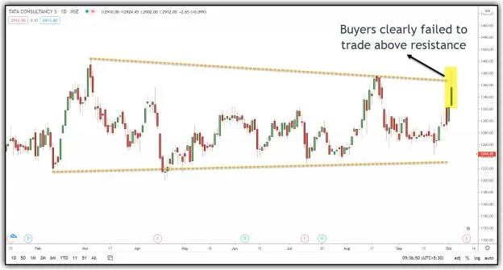
Image 6.14 – Case Study 3 (PA-1)
The above image is a daily chart of TCS. Price is moving in a clear sideways channel. In the end, buyers tried to push the price to the upside. But they failed miserably due to the sudden entry of sellers above the resistance zone.
In this candle, approx. 50% of the daily range is a selling wick. It indicates that buyers lack the firepower to fight with sellers. Instead of taking a ‘short’ trade, we can wait for one more candle to see who is more powerful.
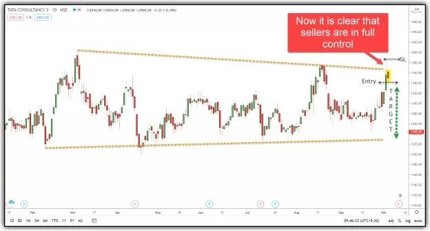
Image 6.15 – Case Study 3 (PA-2)
If you look at image 6.15, the next candle is dominated by sellers. There was an open-high, and then the fall sustained for the entire day. Besides, the price failed to trade above the resistance line and high of the previous candle.
It confirms the presence of a robust selling force. Hence, we can plan a ‘short’ trade below the low of the selling candle, keeping a stop-loss above the selling wick or the resistance trend line. We can aim for the support trend line as our target.
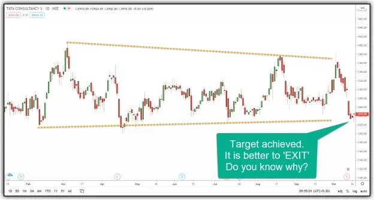
Image 6.16 – Case Study 3 Result
Image 6.16 shows the result of the trade. The price has reached our target of the support trend line.
I suggest exiting the trade at this moment. Can you think of a reason? The answer is simple. There is a rejection candle with a big buying wick at the support line. So, instead of taking a risk, it is better to book the profit. I am not saying it will go entirely upside from here. But there is a possibility of a slight bounce after seeing the rejection candle, and we are not sure to what level it will bounce. Hence, it is better to exit the trade.
If you are a risky trader, you can exit 50-75% of the position at the support line and carry the remaining position with the entry price as your stop-loss. In this way, even if the price hits your stop-loss for the small position, you end up making money for the large quantity.
The same price action concepts work very well, even in intraday or shorter time frames. But traders forget or ignore one crucial aspect when it comes to intraday trading or short-term trading. Whenever we get into a lower timeframe, opportunities increase so does the risk and noise. So our money management rules should be designed to prevent erosion of our capital even if we get a few successive failed trades.
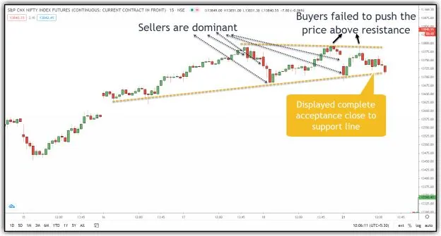
Image 6.17 – Case Study 4 (PA-1)
Image 6.17 shows a Nifty 15-min chart. Below points are very clear from the chart:
All these points indicate that there is a higher probability of price breaking the support trend line.
We can either plan a ‘short’ trade below the last red candle or wait for completion of one more candle (please note that in intraday trading, due to waiting, we may miss good opportunities).
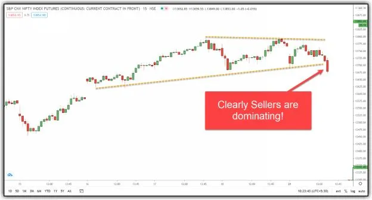
Image 6.18 – Case Study 4 (PA-2)
Image 6.18 shows the same chart after the completion of another 15-min candle.
It is clear that sellers are in complete control. If you have already taken the trade, you are already in profit. If not, you can plan a ‘short’ trade below the low of the last red candle, keeping a stop-loss above the high of the red candle (or above the support line). We can aim for the previous swing low (13455) as our target.
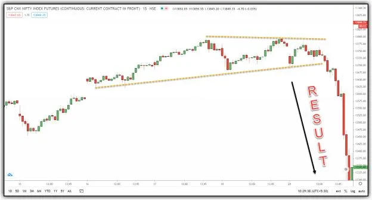
Image 6.19 – Case Study 4 Result
Image 6.19 shows the result of the trade and it doesn’t need any explanation!
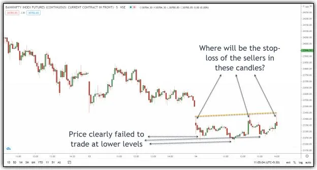
Image 6.20 – Case Study 5 (PA-1)
Image 6.20 presents an interesting scenario with a 5-min chart of Bank nifty. Banknifty showed a gap down open from the previous day low. However, it failed to extend on the downside. It started to make higher lows successively.
However, strong selling can be witnessed in the three candles with large upper wicks below the resistance trend line, as shown in the image. At this moment, it is an equal fight between buyers and sellers. All the sellers have kept their stop-loss above the day’s high. Similarly, all the buyers have kept their stop-loss below the day’s low
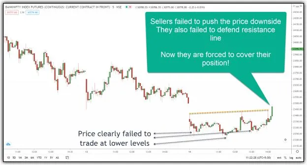
Image 6.21 – Case Study 5 (PA-2)
Image 6.21 shows the same chart but after completion of 3 candles.
These three candles displayed 'Acceptance' of the price at the resistance trend line. The last candle also traded above the day's high, which means all the sellers should run to cover their positions.
It also indicates a 'Trend Day' possibility with an upside 'Range Extension' (Both Trend Day and Range Extension are Market Profile concepts. Market profile is highly beneficial for intraday traders and short-term traders. (To know more about market profile, read this article).
Hence, a trader can plan a 'Long' trade above the breakout candle's high, keeping a stop-loss below the breakout candle's low. One should apply the same logic of price action at every resistance level to manage the exit for their trades.
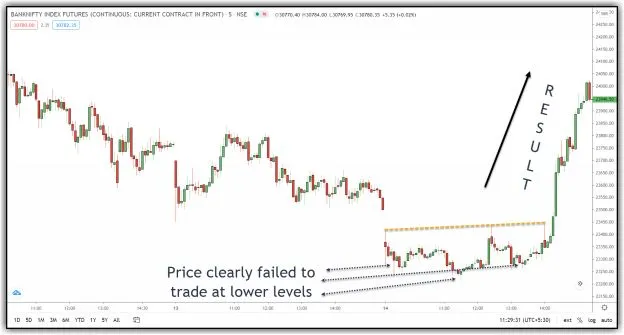
Image 6.22 – Case Study 5 Result
Image 6.22 shows the result of the trade. It witnessed a significant and quick move on the upside. The primary reason is that sellers ran for cover and indirectly became buyers (their stop-loss order is a buy order), and their eagerness to close the trade resulted in a massive move on the upside
I hope all these explanations and case studies about price action are helpful. Did you notice I have not mentioned anything about “Volume” yet? I did this intentionally because of two reasons:
1 – To focus your attention on the considerable information available
from about the ‘Price’ alone, and
2 – Many traders have read the traditional usage of ‘Volume,’ and their
minds would think to apply all those things if I would have included volume
The next chapter is dedicated entirely to “Volume,” and you will find a
completely different application of volume in this chapter.